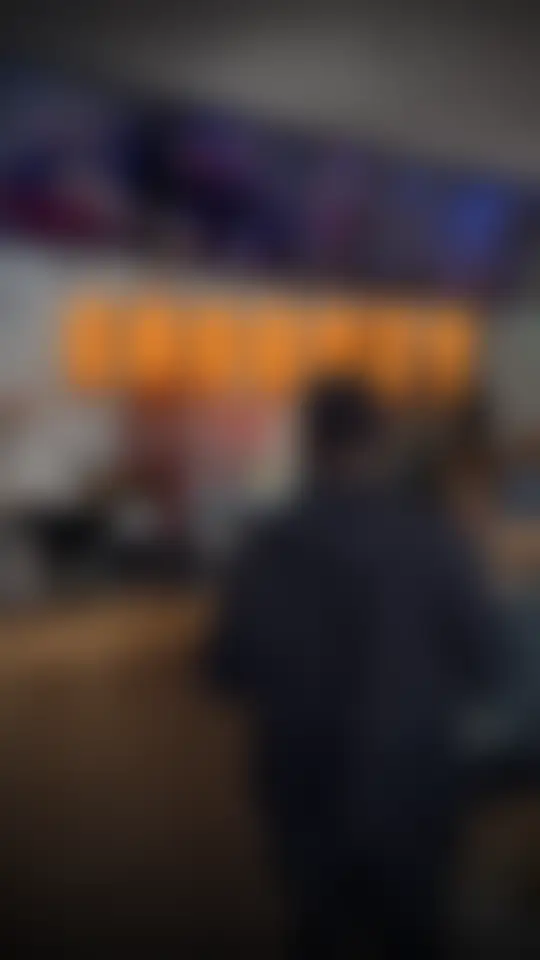
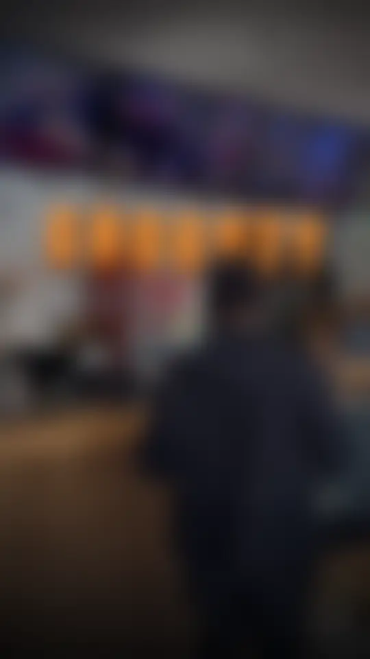
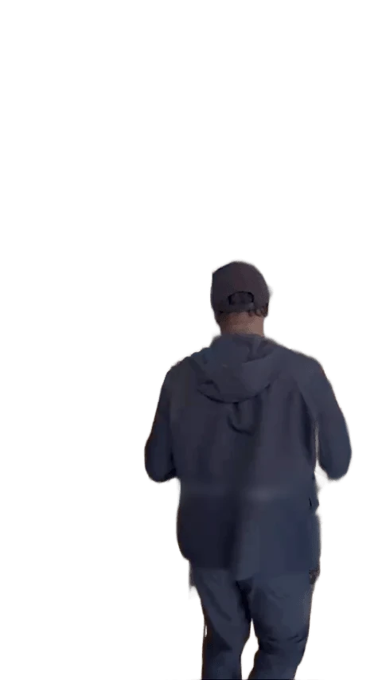
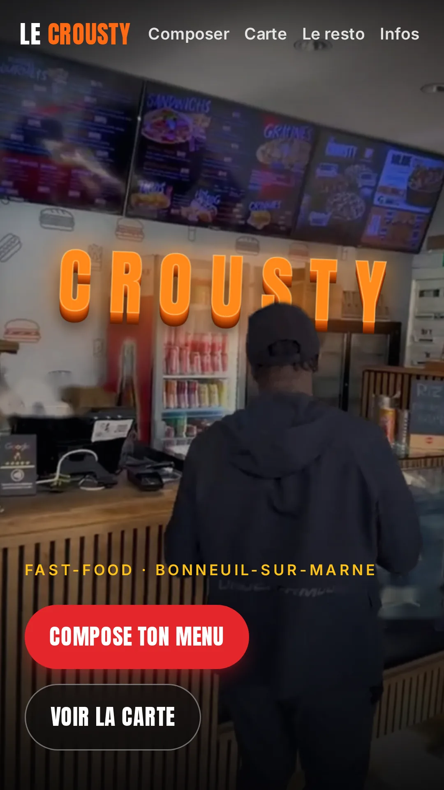
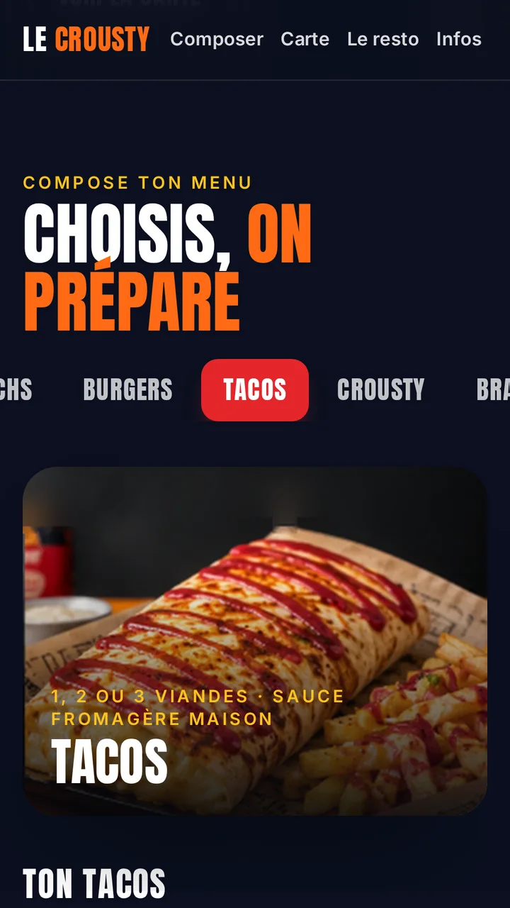

RALENTI ×0,5
01
IMAGES
DE LEUR VIDÉO
1
Leur vidéo TikTok
2
Les lettres
3
Lui, détouré
REMBOBINAGE
18:30
5G


Site en cours
de validation
Elles
peuvent
devenir
ton
site.
Devis gratuit sous 48 h · lien en bio
Partout en France à distance
sur place en Île-de-France
LTNS
°
Site du Crousty en cours de validation
pas encore en ligne
LTNS
°
VRAI PROJET
SITE DU CROUSTY
Comment
ces
lettres
passent
derrière
lui ?